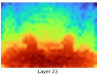

Figure 2: Overview of GeoWeaverFigure 2: Overview of GeoWeaver. GeoWeaver treats geometry as a representational prerequisite rather than a late fusion signal. A frozen VGGT encoder provides a multi-layer geometry bank, from which each visual token adaptively retrieves sparse geometric evidence via query-conditioned compact geometric grounding before entering the Qwen LLM. This pre-reasoning grounding process converts semantic visual tokens into geometry-grounded visual tokens for spatio-temporal reasoning.

(b) Visualization of VGGT feature responses from different layers(b) Visualization of VGGT feature responses from different layers. Figure 1: Motivation and paradigm comparison of GeoWeaver. Top: Existing geometry-enhanced VLMs mainly introduce geometry through pre-fusion or LLM-side fusion, while GeoWeaver grounds visual tokens before language reasoning. Bottom: VGGT feature maps from different layers exhibit heterogeneous spatial responses, indicating that multi-layer geometry does not provide a uniform signal. This motivates our design of treating geometry features as a multi-level evidence bank.